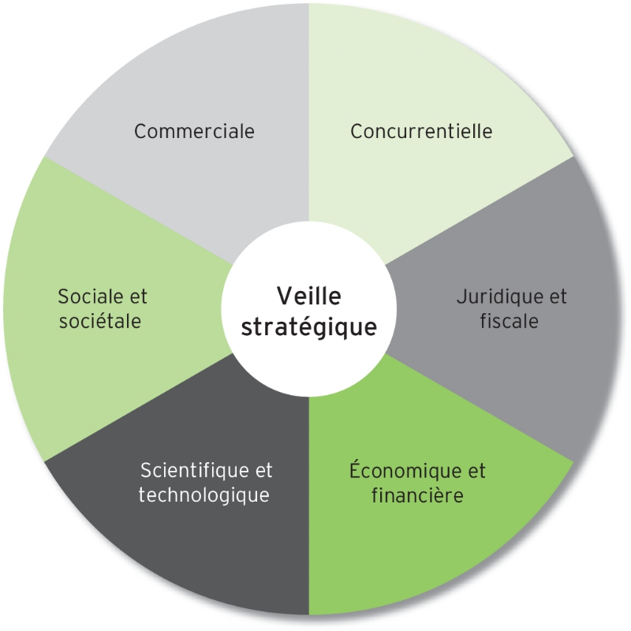

Cette section est dédiés aux veilles stratégiques.

La veille stratégique est un type de veille informationnelle
qui englobe l’ensemble des autres veilles, telles que la
veille sociétale, la veille en entreprise, la veille
concurrentielle, la veille commerciale, la veille fournisseur,
la veille image, la veille juridique ou encore la veille
technologique. Elle regroupe les techniques de recherche
d’information, traitement de l’information et de
visualisation d’informations. La veille stratégique est
une aide à la prise de décision stratégique pour une
entreprise ou une administration, voire un État grâce à
une analyse des évolutions tendancielles et de leur
environnement. La veille est de nature itérative et
prospective afin d’anticiper les changements dans
l’environnement de l’organisation et d’éviter des
événements indésirables.